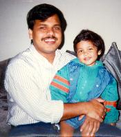

WEEKEND THOUGHTS # 27

Hello Everyone,
This Week's Weekend Thoughts is from a young and brilliant Engineer Susanta Kumar Mohanty, from Cupertino, California. The article in a nut-shell describes the happy and memorable experiences of his life and also touches upon some frustrating experiences in ones professional life. Reading it you will realize that these are true for everyone of us. Susanta Bhai also talks about our Motherland and how its our duty to help improve conditions at home. We have to make sure that Orissa is not left behind while the rest of the country is making rapid progress.
On a personal note, I know Susanta Bhai from his short stint at L&T Kansbahal 9 years ago. He and other members of his group gave me my first exposure to Computers. I am very grateful to him for that. We were all excited about these amazing m/cs. This was the time when we still had the punch-card system and a huge air-conditioned room with huge racks of machines. Wow, we have all come a very long distance.
Let's listen to what Susanta Bhai has to say.
Regards,
Sidhartha Mohanty (9/22/95)
(sid@aluxs.att.com)
It was a pleasant surprise to receive a mail from DM, asking to write something for the Weekend Column. It is nice and enjoyable to go through the articles in ORNET , but when it comes to writing something I really don't know where to start. Ofcourse, now writing has definitely been limited to the computer world of External Spec, Internal Spec, Test Spec, Programs etc.......So when it comes to write something like this I start searching for a new boot-strap routine. Definitely its not an article with some thought provoking issues nor does it have a lot of food for thoughts, but, it is yet another article with some sweet memories down the lane, some hope for a brighter and better India/Orissa, some unsolved issues and ....and ....find out for yourself (may be boring)
Susanta Kumar Mohanty(Rali)
Schooling : Govt. High School Unit 8, BBSR
I.Sc : B.J.B College BBSR - 1981
Engineering : UCE Burla 1985
Worked For:
Larsen and Toubro (L&T) - 1985 -88
Tata Consultancy Services (TCS) Dec 88 to Dec 91
Worked in a Project at Minneapolis in 1990
IMFA Systems - Worked as Systems Co-Ordinator Dec 1991 to June 1993
Joined with my wife in her Consultancy (Compusoft) for three months
Worked as a Project Lead for Banamex in Mexico City Sep-93 to Aug 94
Now at Tandem Computers Since Sept 1994
Married to :
Anasuya Lall Mohanty
MCA - REC Rourkela
Worked for : National Informatic Center (NIC)
Tata Consultancy Services (TCS)
Own Consultancy at BBSR (Compusoft)
Son:
Ashish (Sanu) One year and Eight Months old
EXPERIENCES FROM MY LIFE
Life as a student :
Past is always beautiful. More so when you go back down the memory lane into the days of your school life. It is one of the sweetest periods of life. Life revolved around the classes, the school play-ground and your friends who become friends for a life time. Not a single day passes without playing something in the School field. Be it football, volley ball or cricket or be it something like bati, natu or gudi. Going to school was fun, so was the life. Comes summer vacation and we are all set for the film-festivals in the OUAT campus or the melody programs in the hostels. After those are over, look for drive-in movies. Anywhere in Bhubaneswar is fine. We will be there with our disposable chairs (news papers). If the front side of the screen is full, never mind, there would be some place behind the screen. Some movies (Ka, Ma, Adinamegha, Awara etc..) I must have seen 15 to 20 times in those road-side, sorry, drive-in theaters.
Life after school is a bit different. Now it is life as a science student in BJB college. Those big physics books of Weber Manning and White were a bit scary so were the high-sounding words of the PCM teachers. Before you really graduate from your black pant and white shirt school uniform to a more fashioned bell-bottom and color full shirt your are ready for a class test. For the first few months, those hi-fi words were going tangent over my head. Before I could realize what and why I am reading these topics it was time for the annual exams. As usual with an aspiration of becoming either an Engineer or an Doctor I had biology as my fourth optional. What a miserable time I had with that subject and in those Zoology labs. I could have utilized my time in a much better way rather than studying the subject in which I had absolutely no interest.
Now it was life in a professional college hostel. You see a batch of bright aspirant future engineers as your friends. First year everybody is at the top of their spirits. We start dreaming of those high rising corporate offices with glass windows facing the sea. Civil branch students at their peak, thinking nothing below the rank of the Chief-Engineer. Time passes by and you start realizing the hard facts of life. By the time it is final year you have realized that being an Engineer does not even guarantee you a job.
After all those years as a student (definitely one of the best time in any one's life) when I look back several questions come to mind. There are several subjects I don't know for what and why I studied them for. The irony is that the person who was teaching them also did not know what and why he was teaching those for, other than the fact that, he was being paid for that. I think in the whole education system billions of man days are being wasted in creating, teaching subjects where both the students and the teachers don't know why and what the subjects are for. As Debi Mishra suggested instead of churning out graduates couldn't this resources not be used in developing the living standard of the people or up-lifting the economy of the country?
Almost all the processes are processes of elimination not a process of selection. If you apply for the job and finally get selected, its not that you are the right selection for the job, but that the rest of the applicants are eliminated during the process of elimination (so called selection). A first class masters in Physics gets selected to a bank job, not that the bank wants to utilize his physics knowledge, but with the same pay they want to hire the brightest candidate. Makes sense. But what a national waste of resources. Here are some of my own experiences as a professional.
Life as a professional
I was lucky enough to get a job from campus in Larsen and Toubro (L&T). With all those aspiration to work for one of the best professionally managed companies in India, I landed in the L&T campus. First few weeks were the orientation program in the shop floor. Looking at the life of a shift engineer my desire to become a shop floor man had already died. The advice of the seniors were, if you want to be in this place you have to forget that you are an Engineer and start learning the new technique of running for a fork lift or an over head crane. Learn to whistle at the highest pitch. Not bad. But, may be I am not good at those. I opted for systems department. After leaving L&T, I joined Tata Consultancy Services (TCS). Life in TCS was really fast. Moving around the client sites, doing different kind of projects was definitely a good exposure. That was when I came to Minneapolis for the first time. Debasmita Misra was the first Oriya I met at Minneapolis. He came and picked me up from my hotel for a nice homely Oriya dinner at his place. It was so nice to see some Oriya faces at a far away place. In fact after that I came to know more Oriya families in Minneapolis than I knew at Calcutta.
After I got married we decided to move to Bhubaneswar. I joined IMFA Systems and my wife started her own software consultancy at BBSR. I also joined her before taking up the assignment at Mexico City. My last stay in Orissa has given me some real good exposure about Orissa.
Life in Orissa
As a student I have spend all my life in Orissa. I am lucky enough to travel to most of the interior parts of Orissa. Those memories are the sweetest and the brightest things about the places. Bhubaneswar is definitely the best place in the world for both of us. For my wife nothing is tastier than the BJB Chat and for me nothing is more entertaining than the guli khati at Bhaina Dokan (added to that is the garam bara). But, when I worked as a professional the memories are not that pleasant. I was in BBSR representing TCS (TCS had one office at BBSR which eventually got closed), worked for IMFA Systems and worked with my wife in her Consultancy. In all these occasions the experience was something different.
Once I had gone to the landlord to pay the rent for TCS BBSR Office. The landlord's comment was Your office may not be here for a long time. Why ! I was surprised. No, for last two years two other big companies had taken this building on rent, but they closed down their offices and went back. So I believe there may not be enough potential in this place. I kept quiet. And exactly the same thing happened for TCS office. But I believe the reason was not the same. When the PC market was booming, PSI Kalinga was closed down. Unitel (backed by UB group!) was running with major losses, and might have been closed too. There may not be more than 5% of the industries in any industrial estate in Orissa running on a profit. Look at the Software Technology Park. When the overall software market is growing at more than 30%, how much revenue has been generated from the STP? How many software professionals have found job in that place? The simple reason for all these may be Something is wrong with that place (mati ra dosa). But there is something beyond this. The people who matter in Orissa (most of them) will be happy to see the failure of an organization than to see it succeed. How can a fellow Oriya entrepreneur be more successful than them!! If you become successful you will have more envious Oriya people than your competitors. So if you are a first generation entrepreneur trying to do something in Orissa do not expect much from the so called helping hands in Orissa.
But the irony is that without industrialization the growth of the state is impossible. No amount of charity can uplift the standard of living of the people in Orissa. Every year Orissa must be getting hundreds of crores of rupees as aid from UN, Govt of India and International Organizations for developing the primary health care, elementary education, self employment scheme etc etc. But does it really help? Half of the fund get returned unutilized. The other half get wasted on the whole process. I would like to give two examples on these. There was an UN funding for providing primary health care in all the villages of some districts. After all the filtration at various level finally some money was spent in building the primary health care centers. In the first year itself half of the instruments were stolen from those places, because it was no one's property. Second year no funds for buying medicine for those centers. People start digging out the bricks from those places. So the net result is ....zero. In another example one of my friend after doing his MBA from Xavier went to a co-operative bank with a nice proposal. The bank was funding Rs 10,000 to around 200 people in his village for dairy and poultry farms. His proposal was: instead of funding individually; fund a company. He would also have invested 10% in that. The company would have developed a dairy and poultry farm where these people would have been employed. The proposal never came through.
There may be many Oriya people (NROs) who have potential in creating employment back in Orissa, who have the strength of putting Orissa in the industrial map of India, making a difference in the lives of hundreds of people. And the people who matter in Orissa and are in a position to help, should lend their helping hands in achieving the same. Every thing else like health care, education and the standard of living will follow.
The consultancy which was started by my wife (handed over to some friends while leaving India) is running well and has more than ten full-time persons. Our dream is, and always will be to do something back in Orissa, but what and how is time dependent.
The article starts with sweet memories of school life, and then goes on to describe college life. It questions the value of science and technology education in a country which does not have the opportunities to take full advantage of the technical talent. The article gives example of a science graduate taking up a bank job. In fact, I will add that top IAS positions, which are among the most prestigious jobs in India are now being filled up by technical people who can make little use of their skill. This is expected in a country which is not at the cutting edge of technology (but things may be changing fast).
The article then criticizes the system back home for hindering developmental activities as we all know.
Your comments are always welcome...

Susanta and Asish Susanta Kumar Mohanty
Susanta Kumar Mohanty

Ride back to Home Page...
![[IMAGE]](../../wt/rath.gif)